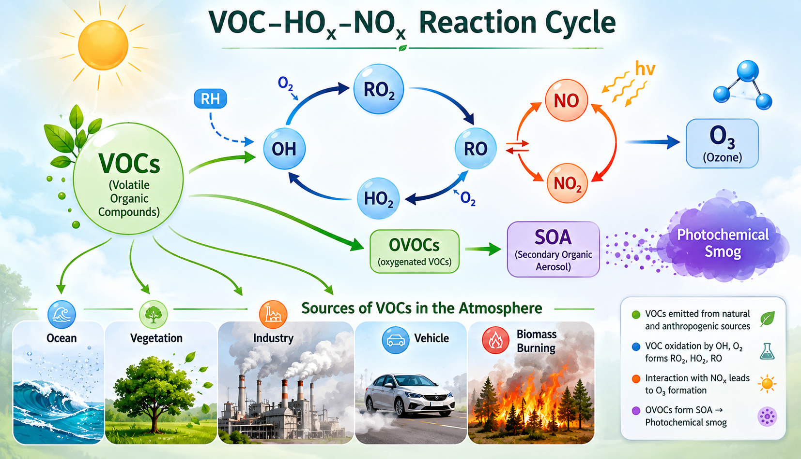

Volatile Organic
Compounds (VOCs)
From forest canopies to urban streets — understanding the invisible chemistry that shapes our atmosphere, climate, and health.
What are Volatile Organic Compounds?
VOCs are a vast and chemically diverse family of carbon-containing molecules that vapourise readily into the atmosphere at ambient temperatures and pressures. They participate in complex photochemical reactions that produce secondary pollutants, aerosols, and greenhouse gases — making them central to both air quality science and climate research.
Scientific Definition
Volatile Organic Compounds (VOCs) are organic chemicals with a boiling point below 250°C at standard atmospheric pressure (101.3 kPa), causing them to evaporate readily under normal indoor and outdoor conditions. They contain carbon (C) bonded with hydrogen (H), oxygen (O), fluorine (F), chlorine (Cl), bromine (Br), sulfur (S), or nitrogen (N). The WHO defines indoor VOCs as those with boiling points between 60–260°C. Atmospherically, the most important subclasses are the Non-Methane Hydrocarbons (NMHCs), isoprene, monoterpenes, and oxygenated VOCs (OVOCs).

Key VOC Species in the Atmosphere
Over 1,000 VOC species have been identified in ambient air. The most atmospherically significant are those with high emission rates, fast photochemical reactivity, and secondary pollutant-forming potential.
Isoprene
The most abundantly emitted biogenic VOC globally (~500 Tg C/yr). Emitted primarily by broadleaf trees. Highly reactive with OH radical; key precursor to ozone and SOA. Strongly studied in Amazon research.
🌿 Biogenic · Forestα-Pinene
Dominant monoterpene emitted by conifers and forest vegetation. Forms secondary organic aerosol (SOA) efficiently. Studied at urban sites in India and the Western Ghats.
🌲 Biogenic · ConiferBenzene
A toxic aromatic NMHC from vehicle emissions, combustion, and solvents. Known human carcinogen (IARC Group 1). Used as a tracer for anthropogenic pollution in Delhi studies.
🚗 AnthropogenicToluene
The most abundant aromatic hydrocarbon in urban air. Sources include fuel evaporation, paint, and printing. High T/B (toluene/benzene) ratios indicate fresh traffic emissions.
🏭 Urban / IndustrialFormaldehyde
The simplest aldehyde; both directly emitted and a major VOC oxidation product. Important OH source via photolysis. Elevated in photochemically aged air masses.
⚗️ Primary + SecondaryMethanol
The most abundant oxygenated VOC in the atmosphere (~100 Tg/yr). Emitted by plants, biomass burning, and soils. Important for HOₓ chemistry in the free troposphere.
🌱 Biogenic / BiomassDimethyl Sulfide
The dominant biogenic sulfur compound from marine phytoplankton. Critical for marine boundary layer chemistry, aerosol formation, and cloud condensation nuclei. Found in Indian Ocean studies.
🌊 Marine · PhytoplanktonEthylene (NMHCs)
Light NMHC emitted by vehicle exhaust, biomass burning, and vegetation. Used to calculate OH radical concentrations. Studied in the Northern Indian Ocean marine boundary layer.
🔥 Combustion / MarineThe VOC Oxidation Cascade
Once emitted, VOCs undergo rapid photochemical oxidation driven by the OH radical — the atmosphere's primary "detergent." This cascade produces ozone, secondary organic aerosols (SOA), and ultimately CO₂ and water. Understanding this chemistry is central to air quality modelling and satellite retrieval validation.
α-Pinene
UV photons
radicals
Aerosol
oxidation
to inorganics
NO₂ + hν → NO + O → O₃ formation
→ Photochemical smog
→ ISOPOOH → OH recycling
→ Secondary aerosol formation
Sources of VOCs
VOC emissions span a vast range of natural and anthropogenic sources. Global biogenic emissions (~1,000 Tg C/yr) dwarf anthropogenic ones (~150 Tg C/yr), yet anthropogenic VOCs dominate in urban environments where health impacts are greatest.
Forests & Vegetation
Deciduous and evergreen forests are the dominant global VOC source. Isoprene emission is enzyme-mediated and tightly coupled to light and temperature. The Amazon rainforest contributes ~15% of global isoprene flux. Emissions are modulated by convection and forest clearing (key research focus).
~75% of global fluxTransportation
Vehicle combustion of petrol and diesel releases aromatic NMHCs (benzene, toluene, xylenes — BTX), alkanes, and alkenes. In megacities like Delhi, transport is the dominant anthropogenic VOC source. Cold starts and idling traffic produce disproportionately high emissions.
~30% anthropogenicMarine Phytoplankton
Phytoplankton blooms in the Arabian Sea and Indian Ocean produce isoprene, DMS, and light NMHCs. Marine VOC emissions are poorly constrained in global models. Research in the Indian Ocean showed extremely high isoprene levels during spring inter-monsoon linked to phytoplankton blooms.
~5–8% global biogenicHousehold & Building Products
Paints, adhesives, cleaning agents, air fresheners, pesticides, and personal care products emit a wide spectrum of VOCs indoors. Indoor VOC concentrations can be 2–5× outdoor levels. Building materials (wood, carpets, composite panels) off-gas for months after installation.
~20% anthropogenicBiomass Burning
Forest fires, crop residue burning, and cooking fires emit a complex mixture of VOCs including furans, phenols, and oxygenated compounds. Biomass burning is a major source in tropical regions and drives seasonal VOC variability in the Amazon, affecting transport and chemistry at all altitudes.
~10% global totalIndustrial Processes
Chemical plants, petroleum refineries, printing, and coating operations release concentrated VOC mixtures. Industrial NMHCs often include propylene, ethylene, and chlorinated compounds. Point-source VOC emissions are regulated by emission standards in most developed countries but remain poorly controlled in developing regions.
~25% anthropogenicHealth & Environmental Effects
VOC impacts span from acute human health effects at local scales to global climate feedbacks via aerosol-cloud interactions. The dual nature of VOCs — both locally harmful and globally climate-relevant — makes them a uniquely complex research challenge.
Human Health Effects
- Short-term exposure: Eye, nose, and throat irritation; headaches; dizziness; nausea; exacerbation of asthma and respiratory diseases.
- Carcinogenicity: Benzene is a confirmed human carcinogen (IARC Group 1) linked to leukaemia. Formaldehyde is Group 1 carcinogen. Prolonged BTX exposure damages liver, kidneys, and CNS.
- Indoor air quality: Sick Building Syndrome linked to elevated indoor VOC concentrations from furniture, paint, and cleaning products — particularly relevant in sealed modern buildings.
- Urban populations: Studies in New Delhi show elevated winter-time benzene and toluene concentrations 3–8× WHO guideline values, primarily driven by vehicle emissions and biomass burning.
- Ozone-mediated effects: Tropospheric ozone formed from VOC+NOₓ reactions causes ~1 million premature deaths/year globally and reduces crop yields by 2–10%.
Environmental Effects
- Ground-level ozone (smog): VOCs + NOₓ + UV → O₃. Tropospheric ozone is a major air pollutant damaging ecosystems, crops, and human health. Unlike stratospheric ozone it provides no UV protection.
- Secondary Organic Aerosol (SOA): VOC oxidation products condense to form fine particulate matter (PM₂.₅), degrading visibility, affecting cloud microphysics, and influencing global radiative forcing.
- Climate feedbacks: Biogenic VOCs (especially isoprene) form aerosols that scatter and absorb sunlight and act as cloud condensation nuclei — creating uncertain but potentially significant climate feedbacks in a warmer world.
- Ozone layer depletion: Some halogenated VOCs (HCFCs, chlorinated solvents) reach the stratosphere and catalytically destroy ozone — regulated under the Montreal Protocol.
- Ecosystem impacts: VOC-derived ozone damages leaf cells in forests and crops. Paradoxically, some VOC emissions (isoprene) may protect leaves from ozone and heat stress — a complex ecological feedback.
Smog & Ozone Formation
The VOC–NOₓ–O₃ chemistry is among the most studied systems in atmospheric science. Understanding the relative contributions of VOCs versus NOₓ to ozone formation is essential for designing effective air quality control strategies.
emissions
radiation
oxidation
ozone + SOA
Regulatory Measures & Guidelines
Governments and international bodies have developed a range of instruments to control VOC emissions and protect public health. Effectiveness varies widely between developed and developing nations.
Emission Standards & Limits
National Ambient Air Quality Standards (NAAQS) set limits on VOC-derived pollutants (O₃, PM₂.₅). Euro 6 vehicle standards cap NMHC emissions at 0.068 g/km. India's BS-VI norms introduced in 2020 aligned with Euro 6 levels.
Montreal Protocol (1987)
The only universally ratified UN environmental treaty controls production of halogenated VOCs (CFCs, HCFCs) that deplete stratospheric ozone. Credited with averting up to 2 million skin cancer cases per year and is considered the most successful international environmental agreement.
EU REACH & Solvent Directive
The EU Solvent Emissions Directive limits VOC use in industrial coating, printing, and adhesive applications. Products sold in the EU must meet VOC content limits. REACH regulation requires registration of all chemical substances >1 tonne/year including many VOCs.
Air Quality Monitoring Networks
National monitoring networks (India's CAAQMS, EU's EMEP, US EPA's PAMS) continuously measure ambient VOC levels. Satellite instruments (OMI, TROPOMI, IASI) now provide global VOC distributions, enabling model validation and detecting emission source regions.
Product Labelling & Standards
EU Ecolabel, US EPA's Safer Choice, and Green Seal certification require low-VOC content in paints, adhesives, and cleaning products. Indoor air quality standards (ISO 16000 series) specify test methods for measuring VOC emissions from building materials.
Research Funding & IPCC
VOC-climate feedbacks are now included in IPCC Assessment Reports. National agencies (NSF, DFG, DST-India) fund large-scale VOC measurement campaigns. International field experiments (ATTO in Amazon, HONO-India, OP3 in Borneo) are resolving critical uncertainties in global models.
Strategies for Reducing VOC Exposure
Effective VOC mitigation requires action at individual, industrial, and policy levels. The most impactful interventions target the highest-emission sources and highest-exposure environments.
Choose Low-VOC Products
Select paints, adhesives, and cleaning agents labelled "low-VOC" or "zero-VOC." Water-based paints typically emit <50 g/L VOC vs. 300–400 g/L for solvent-based. EU Ecolabel guarantees <30 g/L for interior paints.
Proper Ventilation
Ensure air exchange rates of >0.5 ACH (air changes/hour) in occupied rooms. HEPA + activated carbon air purifiers are effective for VOC removal. Open windows during and after painting or cleaning — indoor concentrations peak immediately after product use.
Clean Transportation
EVs and CNG vehicles emit ~90% fewer NMHCs than petrol equivalents. Catalytic converters in modern vehicles destroy >95% of tailpipe VOCs. Carpool and public transport reduce fleet-wide VOC emissions per person-km.
Green Building Materials
Specify low-emission flooring, insulation, and composite wood products certified by GREENGUARD Gold or BREEAM. Allow adequate off-gassing time after renovation before occupying spaces. Avoid PVC flooring and formaldehyde-based adhesives.
Urban Greening
Strategically planting low-isoprene-emitting tree species in urban areas reduces net urban VOC load. Species like oaks and eucalyptus are high emitters; linden and cherry trees are low emitters — an important consideration for urban planners.
Industrial Process Control
Thermal oxidisers and catalytic oxidation systems achieve >99% destruction efficiency for industrial VOC streams. Vapour recovery systems in petrol stations capture BTEX emissions during refuelling. Carbon adsorption with solvent recovery is used in printing and coating industries.
Volatile organic compounds sit at the intersection of biology, chemistry, and climate. Understanding how forests communicate with the atmosphere — and how human activities perturb that conversation — is one of the great scientific challenges of our time.
— The Invisible Dialogue Between Forests and the Atmosphere